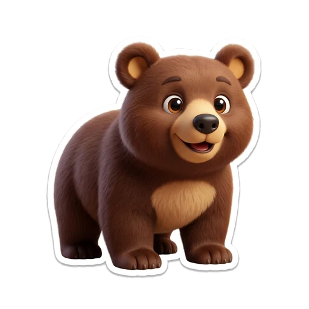
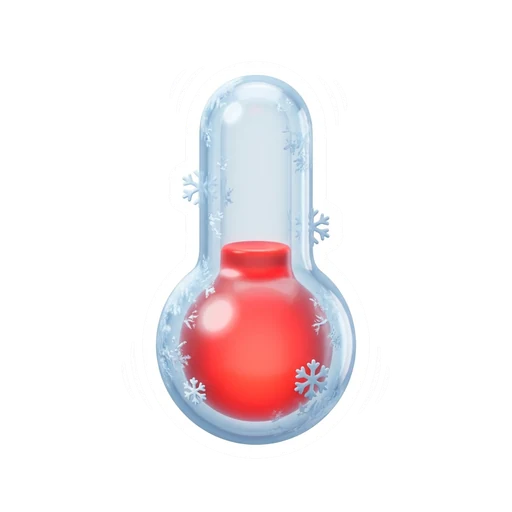
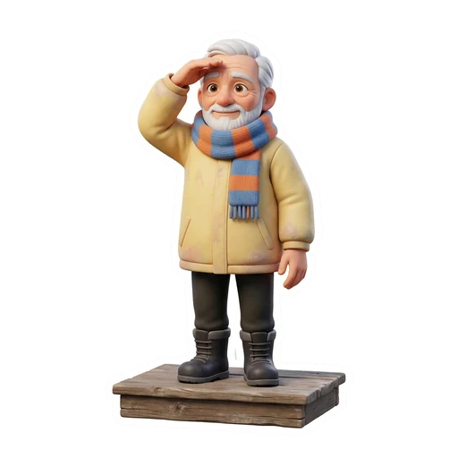
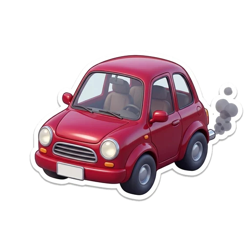
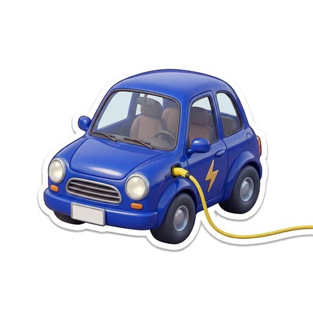
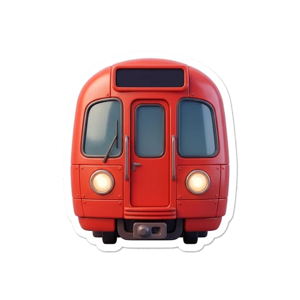
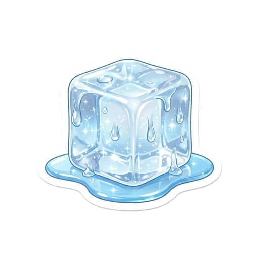

English Quiz · Units 1–4 · Grade 4
25 minutes · 32 marks · read carefully and circle the best answer
B
Name:
Class: 4A
Date:
Teacher: Unit 1 ___/8Unit 2 ___/8Unit 3 ___/8Unit 4 ___/8Total ___/32Level: ____________
1Words and grammar16 marks · 1 each
Circle the correct word.
UNIT 1
😴
1. Alice ______ sleepy.
iswaswere
2. ______ was Alice sleepy? Because she was bored.
WhoWhyWhere
🦋
3. The monarch butterfly goes on a long ______ .
workoutjourneypredator
🧠
UNIT 24. Reading is a ______ for your brain.
rabbitjourneyworkout

5. The bear eats a lot ______ it can sleep all winter.
sobutbecause
6. ______ trees drop their leaves in autumn.
ConiferousDeciduousSmall

7. Bears hibernate so they can ______ the cold.
survivebuildpay
8. The seed ______ into a big fruit.
growedgrowgrew
UNIT 3UNIT 4
9. The polar bear was ______ my size.
twicethinnoisy

10. And I ______ old.
gettingam gettingget am

11. A lot of cars use ______ for energy.
honeygasolinesnow

12. Electric cars are fast ______ quiet.
andbutbecause
13. The players shoot the ball into the ______ .
leagueplatformbasket
14. The Sparks ______ the championship.
wonwinwinning

15. The train stopped, ______ everybody waited on the platform.
butsoor
😌
16. Stay ______ and wait here. Do not worry.
alivesankcalm
2Reading8 marks · 1 each
Read each short text. Circle the correct answer.
UNIT 1
Alice was sitting by the river. She was bored and sleepy. Then she saw a White Rabbit. She chased it and fell down a deep hole.
17. How was Alice at the start?
Bored and sleepyHappy and tallAfraid of the river
18. Where did Alice fall?
Into the riverDown a deep holeOff a bike
UNIT 2
A swallow built a nest in a tree. A baby bird fell from the nest. Go Ne gave it food and paid the vet. Later the swallow gave him a seed. The seed grew into a big fruit.
19. What did the swallow give Go Ne?
A seedA coinA leaf
20. Who paid the vet?
The swallowGo NeThe baby bird
UNIT 3
Gasoline cars are fast, but they are noisy and make the air dirty. Electric cars use electricity. They are quiet and clean, but they are expensive.
21. Which cars are quiet and clean?
Gasoline carsElectric carsOld cars
22. Gasoline cars make the air ...
clean.dirty.cold.
UNIT 4
The Sparks were losing. They worked harder. Chelsea Gray scored a three-pointer, and the Sparks won the championship.
23. Who scored a three-pointer?
HarryLynnChelsea Gray
24. What did the Sparks win?
The championshipA busA train
3Writing8 marks · 2 each
Write ONE full sentence for each. Use a capital letter and a full stop.
UNIT 1 25. Write a question about Alice. Start with Who, Where or Why.Help: Who · Where · Why
/2
UNIT 2 26. Write one past sentence about the swallow story.Help: built · gave · grew · paid
/2

UNIT 3 27. Write one sentence about the ice.Help: is melting · was thin
/2
UNIT 4 28. Write one sentence about the Sparks or the show.Help: scored · won · performed · waited
/2